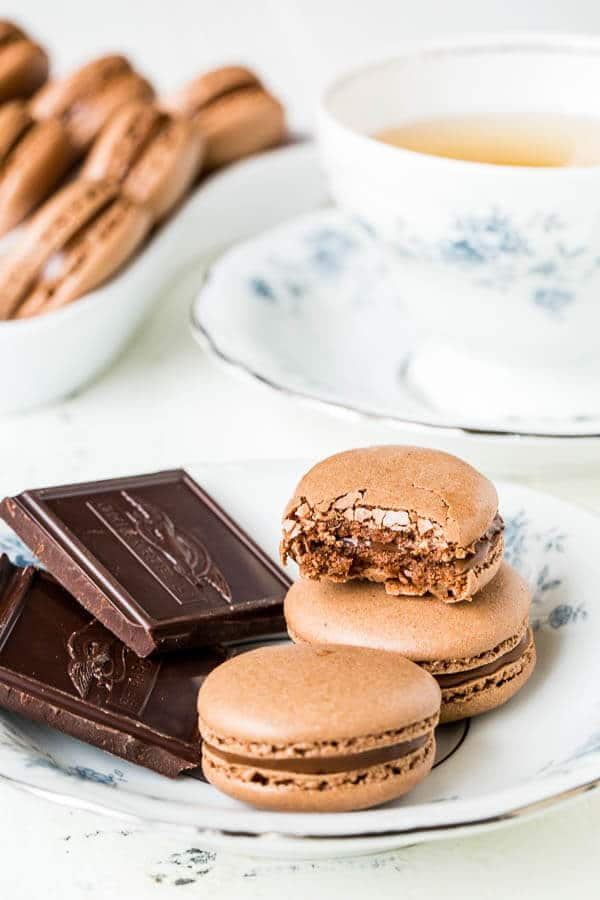
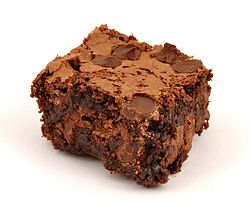
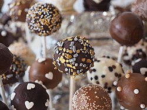

A macaron is a type of dessert that originated from France. It is very delicious and comes in so many different flavors. For example: Raspberry, Strawberry, Coffee, Chocolate, etc. There are so many different types of recipies and families put their own unique twist on every recipe.

Macaron Recipe:
Chocolate macarons
Ingredients for the Macaron shell
1 cup (100 gr) almond flour
3/4 cup (100 gr) powdered sugar
2 tablespoons (10gr) natural cocoa powder
2 large egg whites (75gr), at room temperature
¼ teaspoon cream of tartar
1 teaspoon coarse sea salt, (optional)
Ingredients for Filling
1/3 cup (60gr) semi-sweet chocolate chips
3 tablespoons heavy cream
2 tablespoons Nutella
1 tablespoon Kahlua, (optional)
Directions:
In a medium sized bowl, mix together cocoa powder, powdered sugar, and almond flour, 2 times.
Now in a large mixing bowl, beat 2 egg whites until foamy with an electric whisk on medium speed. Add cream of tartar to the bowl and continue to mix. While mixing, slowly add sugar 1 tablespoon at a time. Increase the speed of the whisk to medium high until hard peaks form.
Mix the dry ingredients over the wet ingredients slowly. Gently fold the mixture with the spatula clockwise from the bottom, up around the side, and then cut the batter in half. The dough might look a little thick but that's normal. It will get thinner as you fold. DON’T MIX IT! Be very careful that you don’t mix and you fold. Once you have reached the right consistency, fold it a few more times just to make sure, but make sure not to over do it.
Put the batter in a frosting bag with a round tip.
Pipe out a 1.5 inch round about an inch apart from each other on 2 baking sheets lined with parchment paper. You will get about 42 shells. To get rid of the air bubbles, tap the baking sheet a few times on the table. Make sure to firmly tap it. It is important to get rid of the air bubbles because if you don’t, it will spread and crack the shell.
Let the macarons sit for about 15-30 minutes. Before baking lightly touch the shell to make sure it is dry. If the batter sticks onto your hand then you have to let it dry for a little longer. If not then it is ready to bake. Sprinkle a little bit of sea salt on each macaron and preheat the oven to 300º F (150º C)
Bake the macarons for 18-20 minutes. To make sure they are done, take one macaron shell, and make sure it doesn’t stick to the parchment paper. If it doesn’t stick, then that means the shells are ready.
Take the shells and transfer then to the drying rack and let the shells cool for 15 minutes, then remove the shells from the baking sheet.
While the shells are sitting, prepare the filling. Heat the heavy cream in a microwave for a minute. In a medium sized bowl, put in your chocolate chips. Then over that pour the heavy cream. Let it sit for a minute, so the chocolate chips melt, and become smooth. Once smooth, stir in Nutella or Kahlua flavor. After adding the flavor, put the ganache in the fridge to cool and thicken.
Put the ganache in a frosting bag and fill the macarons.
You’re Done! If you want to keep it longer, put in an airtight container in the fridge for 5 days or even 5 months.
REST IS ON https://www.sweetandsavorybyshinee.com/sea-salt-chocolate-macarons/
Cookies
There are so many different types of cookies that you can make. Everyone loves them, they are soft and sugary and sweet. Most famous cookie is of course the chocolate chip cookie that everyone eats. However there are so many out there. People make their own recipes and invent new things everyday.
Chocolate Chip Cookie Recipe:
1 cup salted butter softened
1 cup white sugar
1 cup brown sugar packed
2 tsp vanilla
2 eggs
3 cups flour
1 tsp baking soda
½ tsp baking powder
1 tsp salt
2 cups chocolate chips
Directions:
Preheat the oven to 375º F. Line the baking pan with parchment paper.
In a bowl mix together, salt, baking soda, baking powder and flour. Set aside.
Cream together sugar and butter until all is combined
Beat the eggs and vanilla until fluffy
Mix dry ingredients into the wet ingredients until combined
Add in 12 oz of chocolate chips and mix
Roll 3 tablespoons of dough at a time into balls and place them on the parchment paper evenly. You can also use an ice cream scoop to make the balls.
Put it in the oven for 8-10 minutes and then when they are lightly starting to turn brown take it out.
Let them sit on the baking pan for 2 minutes and then transfer the cookies onto the cooling rack
You are Finished
Brownies
Brownies are favorite desserts of many people. They are gooey, chocolatey, and warm desserts. They are very easy to make. You can either make them from scratch or from the grocery store in a box.

Brownie Recipe:
1 cup 8 oz/240 g butter, melted and cooled
2 tablespoons (30ml) vegetable oil
1 1/4 cups (9oz/260g) white sugar
1 cup (7oz/200g) packed light brown sugar
4 (2oz/57g each) large eggs, at room temperature
1 tablespoon (15 ml) pure vanilla extract
3/4 teaspoon salt
1 cup (3.5oz/130g) all purpose flour
1 cup (3.5oz/100g) good quality, unsweetened cocoa powder
7 oz (200g) roughly chopped chocolate or large chocolate chips
Directions:
Preheat oven to 375 degrees F. Line a baking pan with parchment paper and set aside.
In a separate bowl mix flour, baking soda, salt, baking powder. Set aside.
Cream together butter and sugars until combined.
Beat in eggs and vanilla until fluffy.
Mix in the dry ingredients until combined.
Add 12 oz package of chocolate chips and mix well.
Roll 3 TBS of dough at a time into balls and place them evenly spaced on your prepared cookie sheets. (alternately, use a small cookie scoop to make your cookies)!
Bake in preheated oven for approximately 8-10 minutes. Take them out when they are just BARELY starting to turn brown.
Let them sit on the baking pan for 2 minutes and then transfer the cookies onto the cooling rack
Ice Cream
Ice Cream is a very popular dessert. This cold, sweet dessert is usually bought from ice cream shops or bought at the store, but you can also make it at home if you don't want to leave your house.
Cookie Dough Ice Cream Recipe:
Normal Ice Cream:
3 tablespoons unsalted butter
2 cups half and half
2/3 cup dark brown sugar packed
4 egg yolks
pinch of salt
1 ½ teaspoons pure vanilla extract
1 ½ cups whole milk
⅓ cup mini chocolate chips see assembly
Chocolate Chip Cookie Dough:
1/4 cup unsalted butter softened, 4 tablespoons
1/4 cup brown sugar packed
2 tablespoons granulated sugar
1 tablespoon milk
1/2 teaspoon pure vanilla extract
1/3 cup all purpose flour
pinch of salt
1/3 cup mini chocolate chips
Directions
Normal Ice Cream:
In a small saucepan, over medium heat, melt the butter. Cook the butter until it is light brown and smells nutty, stirring often. Be careful not to let it burn.
Add the half and half to the butter and bring just to a simmer.
Meanwhile, in a medium bowl, whisk brown sugar, egg yolks, and salt for a minute or two, until light and fluffy. Slowly pour a cup of the warm half and half into the egg mixture, whisking while you pour (this will slowly bring up the temperature of the eggs). Pour the mixture back into the saucepan. Heat, stirring often, until the mixture slightly thickens and reaches 170 degrees or until it coats the back of a spoon.
Remove from the heat and stir in the vanilla extract. Allow the mixture to cool slightly. Then transfer to a bowl, cover, and refrigerate until cold.
Once the mixture is chilled, whisk in the 1 1/2 cups of whole milk. Pour into an ice cream maker and freeze according to manufacturer's directions.
While the ice cream is churning, immediately prepare the cookie dough.
Cookie Dough:
Beat butter and sugars for several minutes. Beat in milk and vanilla extract. Add the flour and salt and mix until combined. Stir in chocolate chips.
Place the cookie dough in the freezer for 10-15 minutes, to firm up slightly.
Assembly:
Once the ice cream is almost fully churned, add 1/3 cup chocolate chips to the ice cream and drop small pieces of the cookie dough into the ice cream, allowing them to mix throughout. Serve straight from the ice cream maker or cover and freeze.
Cake Pops
Cake Pops aren't very popular, but they are very delicious and are usually made homemade. They have a shell of sweet, dried frosting and the inside is a sweet, gooey cake

Red Velvet Cake Pop Recipe:
1 box red velvet cake mix (about 18.25 ounces)
12 ounces ready-made cream cheese frosting
48 ounces white candy coating (available at craft and baking stores like Michaels)
Paper lollipop sticks
Sprinkles, nuts or candy to taste
Direction
Bake 1 box red velvet cake mix in a 9" x 13" pan as directed. Let cool completely. Finely crumble the cake into a large bowl.
Add ready-made cream cheese frosting to the cake crumbles and use the back of a large spoon to mix until thoroughly combined.
Roll the mixture into 1 1/2 inch balls (if they aren't moist enough to hold their shape, add a little more frosting) and place them on waxed-paper-covered baking sheets. Cover balls with plastic wrap.
Place in the refrigerator 2 to 3 hours (or in the freezer 15 minutes). Place 16 ounces white candy coating, in a deep, microwave-safe bowl and melt in the microwave, stirring every 30 seconds. Melt more candy as needed throughout the process.
Place an upside-down colander or block of Styrofoam on waxed paper. Working in small batches (and leaving remaining doughnut holes in the refrigerator), stick doughnut holes on paper lollipop sticks, pushing in about halfway. (If they don't fit snugly, first dip sticks in 1/2 inch of candy coating and then slide into doughnut holes.)
Dip the doughnut hole into the melted candy coating until it is completely covered, then remove in one motion. Make sure the coating meets at the base of the lollipop stick. If excess coating starts to drip, hold the stick at an angle in your left hand and use your right hand to gently tap your left wrist, rotating the stick as necessary. When coating stops dripping, gently roll in or top with sprinkles, nuts, or candy, if using. Then prop the cake pop upright in a colander hole or the Styrofoam block to dry. If adding swirls or drizzles, let coating dry before drizzling or piping additional melted candy coating. Return pops to colander hole or Styrofoam block to finish drying.
Repeat with the remaining cake balls. Let cake pops dry completely. Store in an airtight container on the counter or in the refrigerator up to 3 days.